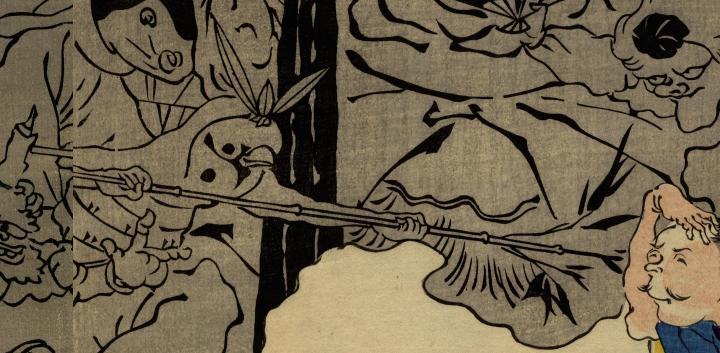

← 图鉴索引

笹の兜を身に付けた雀の化物。竹笹の槍を人間に突きつけている。
出典：親書誌：U426_nichibunken_0268：四天王化物蝋燭；シテンノウ バケモノ ロウソク／日付：2014／資源識別子：U426_nichibunken_0268_0010_0000
Copyright (c)2010- International Research Center for Japanese Studies, Kyoto, Japan. All rights reserved.